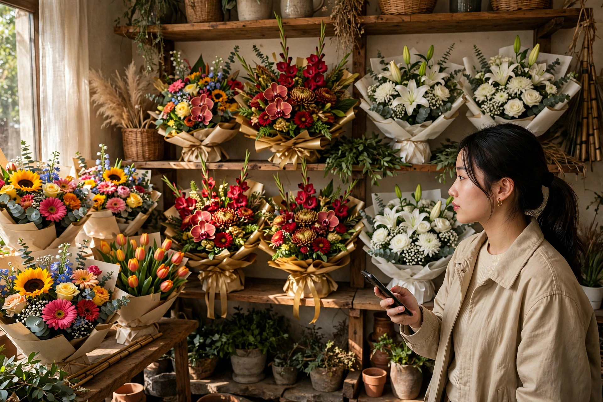

Website cho shop hoa tươi cần có gì: hoa còn bó nào, giao giờ nào, đặt trong một phút
Chủ shop hoa đang gói một bó hoa hồng, hoa ly và hoa hướng dương — khoảnh khắc quen thuộc trong tiệm hoa tươi, và là lý do website shop hoa phải cho khách xem đúng bó còn hàng, chọn giờ giao và đặt xong trong một phút.
Mười một giờ đêm, điện thoại bạn rung liên tục: "Shop ơi bó hồng đỏ này còn không ạ, giá bao nhiêu ạ, sáng mai 8 giờ giao tới công ty được không ạ?" Bạn đang dở tay bó nốt đơn hoa cưới cho sáng mai, trả lời được một tin thì hai tin khác đã tới. Bó hồng khách hỏi thì chiều nay đã có người lấy mất rồi, nhưng ảnh bó hoa vẫn còn nguyên trên fanpage — khách nhìn ảnh, tưởng còn hàng, nhắn hỏi, rồi chờ. Sáng hôm sau bạn mới nhắn lại: "Dạ bó đó hết rồi ạ, shop còn bó khác tương tự ạ" — nhưng khách cần hoa giao đúng 8 giờ sáng, không còn thời gian chờ bạn chụp lại bó khác nữa, đơn hàng thì chưa bao giờ được đặt.
Chủ shop hoa nào cũng quen cảnh này — không phải vì khách không muốn mua, mà vì hoa tươi là mặt hàng héo dần từng giờ, còn cách bán qua tin nhắn thì bắt một người đang cần hoa gấp phải chờ từng câu trả lời. Ngay dưới đây, mình sẽ cùng bạn bóc tách vì sao bán hoa qua Facebook/Zalo đang làm mất đơn, những mục một website cho shop hoa tươi thực sự cần có, và cách bạn tự kiểm tra trước khi bỏ tiền làm web.
Vì sao shop hoa đông khách vẫn mất đơn: ba lỗi quen thuộc
Lỗi thứ nhất là hoa hết là hết, còn ảnh trên fanpage thì còn mãi. Một bó hoa chỉ có một — bó bán rồi là không còn bó thứ hai giống hệt, vì mỗi bó bạn cắm tay mỗi khác, hoa nhập về mỗi ngày mỗi khác. Vậy mà trên fanpage, ảnh bó hoa đẹp vẫn nằm đó cả tuần sau khi bó đã bán, khách nhìn ảnh tưởng còn hàng, nhắn hỏi, rồi chờ bạn trả lời. Tới lúc bạn nhắn lại "bó đó hết rồi ạ", khách đã sang shop khác — ở đó, khách tự thấy bó nào còn hàng, bó nào đã hết, và đặt được ngay bó còn hàng. Với hoa tươi, một câu hỏi "bó này còn không ạ" không được trả lời kịp là một đơn hàng mất luôn, vì khách cần hoa cho một giờ giấc cụ thể, không phải cho một lúc nào đó chung chung.
Lỗi thứ hai là ảnh chụp vội bằng điện thoại không đúng màu hoa thật. Khách mua hoa quyết định trong vài giây bằng cảm xúc: thấy bó hoa đẹp, màu đúng ý, là muốn đặt ngay. Nhưng ảnh chụp vội dưới đèn vàng trong tiệm làm hồng phấn thành hồng đậm, chụp lúc hoa còn nụ thì lúc giao hoa đã nở bung khác hẳn, chụp cận một góc thì khách không hình dung được bó hoa to hay nhỏ. Khách nhận hoa thấy màu khác ảnh, bó nhỏ hơn tưởng tượng, thì lần sau họ không quay lại — mà shop thì mất cả tiền lẫn khách chỉ vì một tấm ảnh chụp vội. Hoa tươi bán bằng mắt, nên ảnh trên web phải là ảnh thật của đúng bó sẽ giao, chụp đủ sáng, đúng màu, thấy rõ bó hoa gồm những gì.
Lỗi thứ ba là khách cần giao đúng giờ, còn tin nhắn thì không hẹn được giờ giao chắc chắn. Hoa sinh nhật cần giao đúng buổi sáng trước giờ tiệc, hoa khai trương cần có mặt trước 8 giờ khi khách tới cắt băng, hoa chia buồn cần tới đúng buổi lễ — mỗi bó hoa gắn với một khung giờ không dời được. Nhưng bán qua tin nhắn, khách hỏi "giao 8 giờ sáng mai được không ạ" rồi chờ, bạn trả lời "để shop xem đã ạ" rồi lại chờ, tới lúc chốt được giờ thì đã muộn. Một quy trình đặt hoa bắt khách phải nhắn tin từng bước để hẹn giờ là một quy trình được thiết kế cho người rảnh — mà khách mua hoa thì đang gấp, họ cần chọn được giờ giao ngay lúc đặt, không phải chờ ai xác nhận lại.
7 mục một website shop hoa tươi thực sự cần có
Một website cho shop hoa tươi không cần nhiều trang, càng không cần hiệu ứng cầu kỳ. Nó cần đúng những mục dưới đây — mỗi mục giải quyết một câu hỏi cụ thể mà khách luôn hỏi trước khi bấm đặt hàng.
1. Chọn bó theo dịp — sinh nhật, khai trương, chia buồn, mỗi dịp một kệ riêng
Khách mua hoa hiếm khi vào web để "xem hoa chung chung" — họ vào vì một dịp cụ thể: sinh nhật người yêu, khai trương cửa hàng của đối tác, chia buồn với gia đình đồng nghiệp. Web phải cho họ chọn dịp trước rồi mới hiện bó: sinh nhật thì bó rực rỡ nhiều màu, khai trương thì lẵng lớn sang trọng để đặt hai bên cửa, chia buồn thì tông trắng trang nhã, kèm vòng hoa và lẵng viếng. Mỗi dịp ghi rõ hoa nào hợp, bó nào thường được chọn cho dịp đó, và bó đó hợp với ngân sách nào — khách chạm một lần là tới đúng kệ hoa của dịp mình cần, không phải lướt qua cả trăm bó không liên quan. Kệ theo dịp càng nằm gần đầu trang càng tốt, ngay dưới thanh tìm kiếm, để khách đang gấp tìm được bó của mình trong vài giây.
2. Ghi rõ còn bao nhiêu bó — hết là hết, không để khách đặt rồi mới báo hết
Hoa nhập về có hạn, mỗi bó cắm tay mỗi khác, nên số lượng còn lại phải hiện ngay dưới mỗi bó: còn 3 bó, còn 1 bó, hay đã hết. Bó nào hết thì hiện rõ "đã hết", không cho khách bấm đặt rồi hôm sau mới nhắn "shop hết bó này ạ", đồng thời gợi ý ngay bó tương tự còn hàng cho cùng dịp. Số lượng này phải cập nhật theo từng đơn — khách đặt xong một bó thì số còn lại giảm ngay, để người vào sau không còn hỏi bó đã bán rồi. Đây là mục cứu shop khỏi nhiều tin nhắn nhất: khách tự thấy còn hàng thì tự đặt, không cần nhắn hỏi "bó này còn không ạ" rồi chờ bạn trả lời giữa lúc bạn đang bó hoa.
3. Ảnh thật từng bó — chụp đúng bó sẽ giao, ghi rõ hoa gồm những gì
Mỗi bó hoa cần ảnh chụp thật của chính bó bạn bán: mặt trước thấy rõ dáng bó, cận hoa thấy rõ từng loại hoa trong bó, kèm giấy gói màu nào, nơ ra sao. Ghi rõ trong bó gồm những gì: hoa hồng mấy bông, hoa ly mấy cành, lá phụ là lá gì, bó cao chừng bao nhiêu, hoa đang nở hay còn nụ, cắm nước thì giữ tươi được khoảng mấy ngày với cách chăm đúng. Với hoa tươi, khách đọc một lượt là hình dung được bó hoa đặt lên bàn tiệc sẽ như thế nào, và đó chính là thứ khiến họ bấm đặt hàng thay vì nhắn hỏi thêm. Ảnh thật kèm thông tin thật còn có một tác dụng khác: khi hoa giao tới tay giống hệt những gì web đã ghi, khách tin shop, và lần sau nhà có dịp gì cũng quay lại chỗ bạn.
4. Nút đặt theo giờ giao — khách chọn khung giờ, shop biết bó nào giao lúc nào
Khách chọn khung giờ giao ngay lúc đặt hàng: sáng 8–10 giờ, trưa 11–13 giờ, chiều 15–18 giờ, kèm ô ghi rõ ngày giao. Ghi rõ đơn đặt trước mấy giờ thì giao được trong ngày — ví dụ đơn đặt trước 16 giờ thì giao trong ngày, sau 16 giờ thì giao sáng hôm sau — để khách tự biết bó của mình có kịp giờ tiệc không, không cần nhắn hỏi. Địa chỉ giao, tên người nhận, số điện thoại người nhận ghi ngay trong form đặt, để shop nhìn vào đơn là biết bó nào cần bó trước, bó nào giao sau, xe nào đi tuyến nào. Một nút đặt theo giờ giao làm đúng sẽ loại bỏ gần như toàn bộ tin nhắn hẹn giờ qua lại — thứ đang ngốn nhiều thời gian của chủ shop hoa nhất mỗi ngày.
5. Ghi chú thiệp kèm — lời nhắn trên thiệp, khách tự gõ, shop chỉ việc viết theo
Ô ghi chú thiệp nằm ngay trong form đặt hàng: khách tự gõ lời chúc, chọn mẫu thiệp, ghi tên người gửi và người nhận. Shop in đúng dòng chữ khách đã gõ — không còn cảnh chép tay từ tin nhắn rồi sai một chữ trên thiệp, mà thiệp sai chữ là cả bó hoa mất ý nghĩa, nhất là thiệp chia buồn hay thiệp chúc mừng đối tác. Ghi thêm một dòng gợi ý mẫu câu chúc theo từng dịp cho khách nào đang bí lời: sinh nhật thì chúc sao cho tình cảm, khai trương thì chúc sao cho sang trọng, chia buồn thì viết sao cho trang trọng. Ô thiệp càng nằm gần nút đặt hàng càng tốt, để khách gõ lời chúc xong là đặt luôn, không phải nhắn thêm một tin riêng chỉ để gửi lời chúc.
6. Giỏ hàng và đặt hàng COD — khách đặt xong trong một phút, nhận hoa mới trả tiền
Khách mua hoa thường mua trong những khoảng thời gian vụn vặt: lúc vừa nhớ ra sinh nhật bạn thân là ngày mai, lúc đang trên đường tới buổi khai trương, lúc tan làm mới nhớ chưa đặt hoa. Quy trình đặt hàng vì vậy phải ngắn nhất có thể: chọn đúng bó còn hàng, chọn giờ giao, điền tên, số điện thoại và địa chỉ là xong — vài lần chạm, không cần tạo tài khoản, không cần chuyển khoản trước. Khách nhận hoa mới trả tiền (COD) đúng thói quen mua bán quen thuộc, không phải lăn tăn chuyển khoản cho một shop lạ vì một bó hoa vài trăm nghìn. Form đặt hàng càng ít ô càng tốt: bỏ bớt những trường không cần thiết, để lại đúng những gì bạn cần để giao hoa đúng giờ, đúng người.
7. Đánh giá của khách đã mua — ghi rõ dịp nào, giao đúng giờ không, hoa tươi được mấy ngày
Với shop hoa, đánh giá có giá trị nhất không phải là "shop uy tín lắm ạ" mà là những dòng ghi rõ thông tin thật: đặt hoa dịp nào, giao có đúng giờ đã hẹn không, hoa tươi được mấy ngày, bó giao tới có giống ảnh trên web không. Mục này cần ghi rõ dịp mua, giờ giao thực tế và cảm nhận về độ tươi của hoa — kèm được ảnh thật bó hoa khách đã nhận thì càng tốt, với sự đồng ý của khách. Năm đến bảy đánh giá như vậy, đặt ngay dưới mục chọn bó theo dịp, có tác dụng hơn cả một trang giới thiệu dài: khách đang phân vân không biết shop giao có đúng giờ không sẽ đối chiếu dịp của mình với dịp trong đánh giá và tự tin bấm mua, thay vì nhắn hỏi bạn rồi chờ trả lời.
👉 Xem thư viện mẫu web theo ngành nghề tại Web Khởi Nguồn
Kệ hoa xếp theo từng dịp — bó sinh nhật rực rỡ, lẵng khai trương sang trọng, bó trắng trang nhã — cách trưng bày này trên website giúp khách chọn đúng bó cho dịp của mình ngay lần đầu.
Khách mua gấp trong ngày và khách đặt trước cho dịp lớn dùng website theo hai cách hoàn toàn khác nhau
Khách mua gấp trong ngày — người vừa nhớ ra sinh nhật bạn thân là ngày mai, hay cần một bó hoa giao trước giờ tiệc chiều nay — vào web của bạn với mục đích rất thực dụng: xem bó nào còn hàng, chọn giờ giao gần nhất, đặt xong trong một phút rồi tắt đi. Với nhóm này, số lượng còn lại, khung giờ giao, giá ghi rõ và giỏ hàng đặt nhanh là quan trọng nhất; họ quyết trong vài giây bằng cảm xúc, thấy bó đẹp, còn hàng, giao kịp giờ là bấm đặt, không cần đọc dài, không cần tư vấn nhiều. Nhóm này cũng là nhóm quay lại thường xuyên nhất — mỗi lần nhà có dịp bất ngờ là một lần họ mở lại web của bạn.
Khách đặt trước cho dịp lớn — người chuẩn bị hoa khai trương cửa hàng, hoa cưới, hoa chúc mừng đối tác cả tuần sau — lại vào web với tâm thế dò xét. Họ đọc kỹ ảnh thật từng bó, so sánh lẵng lớn với bó nhỏ, đọc ghi chú thiệp, xem giờ giao có đúng buổi lễ không và đọc đánh giá của người từng đặt cho dịp giống mình trước khi quyết định. Với nhóm này, ảnh thật từng bó, chọn bó theo dịp, ô ghi chú thiệp và đánh giá ghi rõ dịp mua là bốn thứ quan trọng nhất; thiếu một trong bốn, họ sẽ sang shop khác. Hiểu hai hành vi này, bạn sẽ biết vì sao website shop hoa tươi phải vừa có đủ số lượng còn lại, giờ giao và đặt nhanh cho khách mua gấp, vừa có ảnh thật từng bó, chọn theo dịp và ghi chú thiệp cho khách đặt trước — thiếu một phía là mất một nửa cơ hội.
Gói website trọn gói 586.000đ tại Web Khởi Nguồn gồm những gì cho shop hoa tươi?
Nghe giá 586.000đ, nhiều chủ shop nghi ngờ ngay: rẻ vậy thì web làm ra chắc chỉ để "cho có", được vài hôm lại lỗi. Nghi ngờ đó có cơ sở nếu giá rẻ đến từ việc cắt xén tính năng. Còn ở đây, giá thấp đến từ cách làm: shop nhỏ chỉ cần một website bán hàng đúng nhu cầu, cấu trúc trang cho cửa hàng bán hoa đã được đóng gói thành quy trình chuẩn, đội ngũ không phải ngồi lập trình lại từ con số không cho từng khách, nên chi phí dồn vào đúng phần nội dung và giao diện riêng của shop bạn. Bạn có thể xem chi tiết tại bảng giá và mục gói 586.000đ gồm những gì trên trang chủ.
Cụ thể với một shop hoa tươi, gói làm web bán hàng 586.000đ (giá gốc 2.000.000đ) bàn giao gồm: website theo đúng ngành hoa tươi, với trang giới thiệu shop, trang sản phẩm xếp bó hoa theo dịp, số lượng còn lại và khung giờ giao, trang liên hệ; giỏ hàng và đặt hàng COD để khách đặt xong trong vài lần chạm, nhận hoa mới trả tiền; cụm nút gọi — Zalo — bản đồ nổi một chạm để khách hỏi nhanh "bó này còn không" và tìm đường tới shop. Web dựng xong trong 1–3 ngày, bảo hành kỹ thuật trọn đời. Chính sách làm thử trước, hài lòng mới thanh toán, không cần đặt cọc — bạn xem trước bản dựng của chính shop mình rồi mới quyết định. Khi shop mở thêm chi nhánh hay cần bán hàng bài bản hơn, bạn có thể nâng cấp lên gói website cao cấp mà không phải làm lại từ đầu.
Cách tự kiểm tra một website shop hoa tươi trước khi quyết định làm
Dù bạn làm web ở đâu, hãy tự kiểm tra bằng trải nghiệm của chính khách hàng, với bốn bước đơn giản sau. Bước một: lấy điện thoại của bạn, bật 4G, đóng vai một khách cần một bó hoa giao trong ngày. Đếm số lần chạm từ lúc trang mở tới lúc bạn đặt xong đơn — nếu phải qua quá 4 đến 5 lần chạm, hoặc phải nhắn tin hỏi còn hàng và hỏi giờ giao thì mới mua được, trang đó đang làm mất đơn mỗi ngày. Bước hai: thử chọn một bó theo dịp sinh nhật, xem số lượng còn lại và khung giờ giao có hiện rõ không; thử đặt một bó đã hết, xem web có chặn lại và gợi ý bó tương tự không. Bước ba: thử đặt một bó giao trong ngày, xem form có ô giờ giao, ô ghi chú thiệp, tên người nhận không; gửi thử một đơn hàng qua giỏ hàng COD, xem thông tin có tới tay bạn đầy đủ tên, số điện thoại, địa chỉ, bó hoa và giờ giao khách đã chọn không. Bước bốn: bấm thử nút gọi và nút Zalo ngay trên trang, xem có ra đúng số của shop không; mở lại trang bằng 4G vào đúng giờ cao điểm tối, xem trang và ảnh hoa có hiện nhanh không — khách của bạn cũng đang mở trang trong đúng điều kiện như vậy, thường là lúc họ vừa nhớ ra mình cần một bó hoa gấp.
Quay lại cảnh mười một giờ đêm ở đầu bài: bạn không thể làm hoa ngừng héo, nhưng bạn có thể khiến một người đang cần một bó hoa giao đúng 8 giờ sáng tự xem được bó nào còn hàng, chọn được giờ giao và đặt xong trong một phút, không cần chờ ai trả lời tin nhắn. Bó hoa còn lại, giờ giao rõ ràng, đơn đặt được ngay và nhận hoa mới trả tiền — lúc đó tin nhắn còn lại chỉ là "shop ơi hoa đẹp lắm, tuần sau sinh nhật mẹ em lại đặt nhé", đúng kiểu tin nhắn mà chủ shop hoa nào cũng muốn nhận. Nếu bạn đang cân nhắc làm website cho shop của mình, cứ xem trước các mẫu theo ngành nghề, đối chiếu với bảy mục trong bài này, rồi quyết định cũng chưa muộn.
Muốn shop của bạn có website như vậy?
Xem trước các mẫu demo theo ngành nghề, ưng mẫu nào làm mẫu đó — trọn gói 586.000đ, xem mẫu trước khi quyết định.